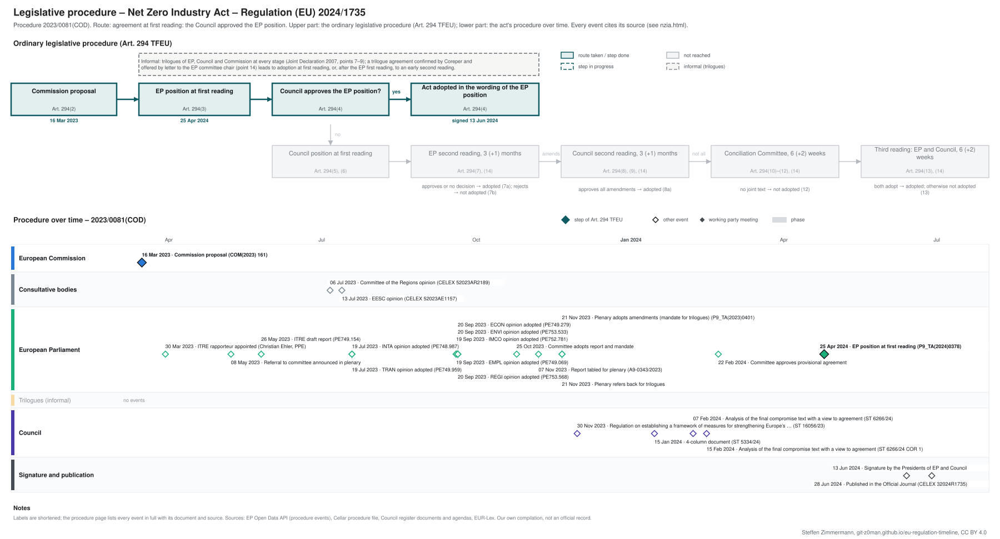

← Regulation timeline › Net Zero Industry Act › Legislative procedure · All procedures
Net Zero Industry Act – Regulation (EU) 2024/1735
Procedure 2023/0081(COD), completed. Drawing: SVG · PNG · PDF (A3) · draw.io · Page as Markdown: nzia.md


| Stage | Completed, published 28 Jun 2024 |
|---|---|
| Route (Art. 294 TFEU) | Agreement at first reading: the Council approved the EP position |
| Latest activity | 28 Jun 2024 · Signature and publication: Published in the Official Journal (CELEX 32024R1735) |

European Parliament committees
| Committee | Role | Rapporteur | Shadow rapporteurs |
|---|---|---|---|
| ITRE Industry, Research and Energy | Responsible | Christian Ehler (EPP), appointed 30 Mar 2023 | – |
| BUDG Budgets | Opinion | not yet appointed | – |
| INTA International Trade | Opinion | Inma Rodríguez-piñero (S&D), appointed 27 Apr 2023 | – |
| TRAN Transport and Tourism | Opinion | Anna Deparnay-grunenberg (Greens/EFA), appointed 25 May 2023 | – |
| ? | Role not given | not yet appointed | Paolo Borchia (ID), Tsvetelina Penkova (S&D), Evžen Tošenovský (ECR), Christophe Grudler (Renew), Damien Carême (Greens/EFA), Marc Botenga (The Left) |
| ECON Economic and Monetary Affairs | Role not given | Luděk Niedermayer (EPP), appointed 20 Apr 2023 | – |
| EMPL Employment and Social Affairs | Role not given | Marie-Pierre Vedrenne (Renew), appointed 15 May 2023 | – |
| ENVI Environment, Climate and Food Safety | Role not given | Tiemo Wölken (S&D), appointed 20 Apr 2023 | – |
| IMCO Internal Market and Consumer Protection | Role not given | Tom Vandenkendelaere (EPP), appointed 27 Apr 2023 | – |
| REGI Regional Development | Role not given | Niklas Nienass (Greens/EFA), appointed 22 Mar 2023 | – |
Source: EP Open Data API (participations) and the Legislative Observatory (joint committee, opinions declined); names link to each Member's page on the EP website. The API names no committee for shadow rapporteurs; they are assigned by the EP's order of participants, which groups each committee.
Events
| Date | Actor | Event | Document | Source |
|---|---|---|---|---|
| 16 Mar 2023 | European Commission | Commission proposal (Art. 294(2) TFEU) | COM(2023) 161 | Cellar procedure file 2023/81 (CELEX 52023PC0161) |
| 30 Mar 2023 | European Parliament | ITRE rapporteur appointed (Christian Ehler, PPE) | EP procedure file | EP Open Data API, procedure 2023-0081 (participation RAPPORTEUR) |
| 8 May 2023 | European Parliament | Referral to committee announced in plenary | EP procedure file | EP Open Data API, procedure 2023-0081 (referral) |
| 26 May 2023 | European Parliament | ITRE draft report | PE749.154 | EP Open Data API, procedure 2023-0081 (committee tabling report) |
| 6 Jul 2023 | Consultative bodies | Committee of the Regions opinion | CELEX 52023AR2189 | Cellar procedure file 2023/81 |
| 13 Jul 2023 | Consultative bodies | EESC opinion | CELEX 52023AE1157 | Cellar procedure file 2023/81 |
| 19 Jul 2023 | European Parliament | INTA opinion adopted | PE748.987 | EP Open Data API, procedure 2023-0081 (committee adopting opinion) |
| 19 Jul 2023 | European Parliament | TRAN opinion adopted | PE749.959 | EP Open Data API, procedure 2023-0081 (committee adopting opinion) |
| 19 Sep 2023 | European Parliament | EMPL opinion adopted | PE749.069 | EP Open Data API, procedure 2023-0081 (committee adopting opinion) |
| 19 Sep 2023 | European Parliament | IMCO opinion adopted | PE752.781 | EP Open Data API, procedure 2023-0081 (committee adopting opinion) |
| 20 Sep 2023 | European Parliament | ENVI opinion adopted | PE753.533 | EP Open Data API, procedure 2023-0081 (committee adopting opinion) |
| 20 Sep 2023 | European Parliament | REGI opinion adopted | PE753.568 | EP Open Data API, procedure 2023-0081 (committee adopting opinion) |
| 20 Sep 2023 | European Parliament | ECON opinion adopted | PE749.279 | EP Open Data API, procedure 2023-0081 (committee adopting opinion) |
| 25 Oct 2023 | European Parliament | Committee adopts report and mandate | EP procedure file | EP Open Data API, procedure 2023-0081 (committee adopting report) |
| 7 Nov 2023 | European Parliament | Report tabled for plenary | A9-0343/2023 | EP Open Data API, procedure 2023-0081 (tabling plenary) |
| 21 Nov 2023 | European Parliament | Plenary refers back for trilogues | EP procedure file | EP Open Data API, procedure 2023-0081 (plenary refer committee interinstitutional negotiations) |
| 21 Nov 2023 | European Parliament | Plenary adopts amendments (mandate for trilogues) | P9_TA(2023)0401 | EP Open Data API, procedure 2023-0081 (plenary amend) |
| 30 Nov 2023 | Council | Regulation on establishing a framework of measures for strengthening Europe’s net-zero … | ST 16056/23 | Cellar procedure file 2023/81 (Council register) |
| 15 Jan 2024 | Council | 4-column document | ST 5334/24 | Cellar procedure file 2023/81 (Council register) |
| 7 Feb 2024 | Council | Analysis of the final compromise text with a view to agreement | ST 6266/24 | Cellar procedure file 2023/81 (Council register) |
| 15 Feb 2024 | Council | Analysis of the final compromise text with a view to agreement | ST 6266/24 COR 1 | Cellar procedure file 2023/81 (Council register) |
| 22 Feb 2024 | European Parliament | Committee approves provisional agreement | EP procedure file | EP Open Data API, procedure 2023-0081 (committee approve provisional agreement) |
| 25 Apr 2024 | European Parliament | EP position at first reading (Art. 294(3) TFEU) | P9_TA(2024)0378 | EP Open Data API, procedure 2023-0081 (plenary amend proposal) |
| 13 Jun 2024 | Signature and publication | Signature by the Presidents of EP and Council | EP procedure file | EP Open Data API, procedure 2023-0081 (signature) |
| 28 Jun 2024 | Signature and publication | Published in the Official Journal | CELEX 32024R1735 · en.md de.md | EP Open Data API, procedure 2023-0081 (publication official journal) |
Documents
Every document the Council register, the EU database of the Parliament of Austria or the EP lists for the procedure, with its state: public documents link to the official file; documents that are not public link to their entry in the Austrian database where there is one (metadata only). Status: public; not public; not public, leak available (an unofficial copy is known to circulate outside the institutions; it is neither published nor quoted here). Released: when a document listed as not public was released, by the date of the Council's public PDF (a technical date) or else the day our daily check found it public.
| Date | Document | Kind | Subject | Status | Released | Text |
|---|---|---|---|---|---|---|
| 20 Mar 2023 | ST 7613/23 | Council: transmission note | Proposal for a Regulation of the European Parliament and of the Council on establishing a framework of measures for strengthening Europe’s net-zero technology … | public status unknown | – | – |
| 20 Mar 2023 | ST 7613/23 ADD 1 | Council: transmission note | Annexes to the proposal for a Regulation of the European Parliament and of the Council on establishing a framework of measures for strengthening Europe’s … | public status unknown | – | – |
| 23 Mar 2023 | ST 7613/23 ADD 2 | Council: transmission note | Commission staff working document Investment needs assessment and funding availabilities to strengthen EU's Net-Zero technology manufacturing capacity | public status unknown | – | – |
| 12 May 2023 | ST 7613/23 REV 1 | Council: transmission note | public status unknown | – | – | |
| 16 May 2023 | ST 9482/23 | Council note | Technologies scope and related benefits in the Net Zero Industry Act proposal - Information from the Commission | public status unknown | – | – |
| 17 May 2023 | ST 9482/23 REV 1 | Council note | Technologies scope and related benefits in the Net Zero Industry Act proposal - Information from the Commission | public status unknown | – | – |
| 26 May 2023 | PE749.154 | EP draft report (rapporteur) | DRAFT REPORT on the proposal for a regulation of the European Parliament and of the Council on establishing a framework of measures for strengthening Europe’s … | public | – | – |
| 31 May 2023 | PE749.069 | EP draft opinion | DRAFT OPINION on the proposal for a regulation of the European Parliament and of the Council on establishing a framework of measures for strengthening Europe’s … | public | – | – |
| 1 Jun 2023 | PE748.987 | EP draft opinion | DRAFT OPINION on the proposal for a regulation of the European Parliament and of the Council Establishing a framework of measures for strengthening Europe’s … | public | – | – |
| 6 Jun 2023 | PE749.279 | EP draft opinion | DRAFT OPINION on the proposal for a regulation of the European Parliament and of the Council on establishing a framework of measures for strengthening Europe’s … | public | – | – |
| 6 Jun 2023 | ST 10175/23 | Council note | Optional consultation of the Committee of the Regions | public status unknown | – | – |
| 16 Jun 2023 | ST 10706/23 | Council note | Reasoned opinion on the application of the Principles of Subsidiarity and Proportionality | public status unknown | – | – |
| 20 Jun 2023 | ST 10870/23 | Council: transmission note | Commission staff working document for a Regulation of the European Parliament and of the Council on establishing a framework of measures for strengthening … | public status unknown | – | – |
| 22 Jun 2023 | PE749.959 | EP draft opinion | DRAFT OPINION on the proposal for a regulation of the European Parliament and of the Council on establishing a framework of measures for strengthening Europe’s … | public | – | – |
| 6 Jul 2023 | CELEX 52023AR2189 | Opinion | Opinion of the European Committee of the Regions – The Net-Zero Industry Act | public | – | – |
| 13 Jul 2023 | CELEX 52023AE1157 | Opinion | Opinion of the European Economic and Social Committee on ‘a) Communication from the Commission to the European Parliament, the European Council, the Council, … | public | – | – |
| 19 Jul 2023 | ST 12012/23 | Council: transmission note | Net Zero Industry Act proposal and Commission communication on the Green Deal Industrial Plan - Opinion of the European Economic and Social Committee (EESC) | public status unknown | – | – |
| 20 Jul 2023 | PE748.987 | EP opinion | Opinion on the proposal for a regulation of the European Parliament and of the Council Establishing a framework of measures for strengthening Europe’s net-zero … | public | – | – |
| 20 Jul 2023 | PE749.959 | EP opinion | Opinion on the proposal for a regulation of the European Parliament and of the Council on establishing a framework of measures for strengthening Europe’s … | public | – | – |
| 25 Jul 2023 | ST 12167/23 | Council: transmission note | Opinion of the European Committee of the Regions | public status unknown | – | – |
| 2 Aug 2023 | ST 12285/23 | Council: transmission note | Opinion of the Parliament of Ireland on the application of the Principles of Subsidiarity and Proportionality | public status unknown | – | – |
| 20 Sep 2023 | PE752.781 | EP opinion | Opinion on the proposal for a regulation of the European Parliament and of the Council on establishing a framework of measures for strengthening Europe’s … | public | – | – |
| 26 Sep 2023 | PE753.533 | EP opinion | Opinion on the proposal for a regulation of the European Parliament and of the Council on establishing a framework of measures for strengthening Europe's … | public | – | – |
| 26 Sep 2023 | PE753.568 | EP opinion | Opinion on the proposal for a regulation of the European Parliament and of the Council on establishing a framework of measures for strengthening Europe’s … | public | – | – |
| 9 Oct 2023 | PE749.069 | EP opinion | Opinion on the proposal for a regulation of the European Parliament and of the Council on establishing a framework of measures for strengthening Europe’s … | public | – | – |
| 9 Oct 2023 | PE749.279 | EP opinion | Opinion on the proposal for a regulation of the European Parliament and of the Council on establishing a framework of measures for strengthening Europe’s … | public | – | – |
| 7 Nov 2023 | A9-0343/2023 | EP committee report | Report on the proposal for a regulation of the European Parliament and of the Council on establishing a framework of measures for strengthening Europe’s … | public | – | – |
| 21 Nov 2023 | P9_TA(2023)0401 | EP position | Framework of measures for strengthening Europe’s net-zero technology products manufacturing ecosystem (Net Zero Industry Act) | public | – | – |
| 30 Nov 2023 | ST 16056/23 | Council position (mandate) | Regulation on establishing a framework of measures for strengthening Europe’s net-zero technology products manufacturing ecosystem (Net Zero Industry Act) - … | public | – | – |
| 6 Dec 2023 | ST 16056/23 ADD 1 | Council position (mandate) | General approach - Statement by the Italian delegation | public | – | – |
| 7 Dec 2023 | ST 16056/23 ADD 2 | Council position (mandate) | General approach - Joint statement by Bulgaria, Croatia, Czech Republic, Hungary, France, Poland, Romania, Slovakia, Slovenia | public | – | – |
| 7 Dec 2023 | ST 16056/23 ADD 3 | Council position (mandate) | General approach - Protocol declaration by Austria | public | – | – |
| 7 Dec 2023 | ST 16056/23 ADD 4 | Council position (mandate) | General approach - Statement by the Federal Republic of Germany | public | – | – |
| 7 Dec 2023 | ST 16521/23 | Council note | Outcome of proceedings | public status unknown | – | – |
| 15 Jan 2024 | ST 5334/24 | Trilogue document | 4-column document | public | – | – |
| 7 Feb 2024 | ST 6266/24 | Provisional agreement | Analysis of the final compromise text with a view to agreement | public | – | – |
| 15 Feb 2024 | ST 6266/24 COR 1 | Provisional agreement | Analysis of the final compromise text with a view to agreement | public | – | – |
| 16 Feb 2024 | ST 6266/24 ADD 1 | Provisional agreement | Analysis of the final compromise text with a view to agreement - Statement by Austria | not public* | – | – |
| 16 Feb 2024 | ST 6269/24 | Council note | Letter to the Chair of the ITRE Committee of the European Parliament | public status unknown | – | – |
| 11 Mar 2024 | PE 45/24 | Council note | Regulation of the European Parliament and of the Council on establishing a framework of measures for strengthening Europe’s net-zero technology manufacturing … | public status unknown | – | – |
| 25 Apr 2024 | P9_TA(2024)0378 | EP position | Framework of measures for strengthening Europe’s net-zero technology products manufacturing ecosystem | public | – | – |
| 30 Apr 2024 | ST 9218/24 | Council note | Outcome of the European Parliament's first reading (Strasbourg, 22 to 25 April 2024) | public status unknown | – | – |
| 21 May 2024 | ST 9275/24 | Council note | Draft Regulation of the European Parliament and of the Council on establishing a framework of measures for strengthening Europe’s net-zero technology … | public status unknown | – | – |
| 22 May 2024 | ST 9275/24 ADD 1 | Council note | Draft Regulation of the European Parliament and of the Council on establishing a framework of measures for strengthening Europe’s net-zero technology … | public status unknown | – | – |
| 24 May 2024 | ST 9275/24 COR 1 | Council note | public status unknown | – | – | |
| 24 May 2024 | ST 9275/24 COR 2 | Council note | public status unknown | – | – | |
| 27 May 2024 | ST 9275/24 REV 1 | Council note | Draft Regulation of the European Parliament and of the Council on establishing a framework of measures for strengthening Europe’s net-zero technology … | public status unknown | – | – |
| 28 May 2024 | ST 10388/24 | Council note | Voting result Regulation of the European Parliament and of the Council on establishing a framework of measures for strengthening Europe’s net-zero technology … | public status unknown | – | – |
| 14 Jun 2024 | PE 45/24 REV 1 | Council note | Regulation of the European Parliament and of the Council on establishing a framework of measures for strengthening europe’s net-zero technology manufacturing … | public status unknown | – | – |
* Not public: the registers are checked again daily until the document is released; last check 26 Oct 2026.
Texts as Markdown
Unofficial Markdown conversions for reading, searching and project folders; only the official document is authentic. "Read" opens the rendered text on GitHub, where a link to a provision (#art-13, #rec-12, #annex-i) jumps to it.
| Date | Stage | Document | Markdown | Read |
|---|---|---|---|---|
| 28 Jun 2024 | Official Journal | CELEX 32024R1735 | en de | GitHub |
| 5 Feb 2025 | Corrigendum | CELEX 32024R1735R(01) | en de | GitHub |
| 27 Oct 2025 | Corrigendum | CELEX 32024R1735R(02) | de | GitHub |
Standardisation
Standardisation requests (Art. 10 of Regulation (EU) No 1025/2012) ask CEN, CENELEC and ETSI to draft harmonised standards in support of the act; standards cited in the Official Journal give a presumption of conformity. Planned requests come from the Commission's annual Union work programmes for European standardisation (Art. 8), which are plans, not decisions. Deadlines as set in the request's annexes (hand-checked).
Planned (annual Union work programmes)
| Year | Action (open for its text) |
|---|---|
| 2024 | 43. Transport and permanent storage of carbon dioxide
Work programme 2024, Annex, Action 43: en.md · de.md · original on EUR-Lex ↗ |
| 2025 | 22. Transport and permanent storage of carbon dioxide
Work programme 2025, Annex, Action 22: en.md · de.md · original on EUR-Lex ↗ |
| 2025 | 55. Qualification of small modular reactor materials
Work programme 2025, Annex, Action 55: en.md · de.md · original on EUR-Lex ↗ |
| 2026 | 8. Small and advanced modular reactors: technology and safety
Work programme 2026, Annex, Action 8: en.md · de.md · original on EUR-Lex ↗ |
Committees and expert groups
Comitology committees of Member State representatives give opinions on draft implementing acts (Regulation (EU) No 182/2011); expert groups advise the Commission on delegated acts, guidance and implementation; groups set up by an act itself (e.g. the NIS Cooperation Group) bring together the Member States, the Commission and agencies. Meetings and documents as published in the Comitology Register, the Register of Commission expert groups and on the Commission's pages of these groups, from 2024 on.
Energy Union Committee
Comitology committee C51000, ENER; examination procedure (Art. 5, 6 and 7 of Regulation (EU) No 182/2011). Official source: Comitology Register ↗
Net-zero technologies committee
Comitology committee C129000, GROW; examination procedure (Art. 5, 6 and 7 of Regulation (EU) No 182/2011). Official source: Comitology Register ↗
Advisory Committee for Public Contracts
Comitology committee C16300, GROW; examination procedure (Art. 5, 6 and 7 of Regulation (EU) No 182/2011). Official source: Comitology Register ↗
Expert Group on Net-Zero Technologies and Supply Chains
Expert group E03968, ENER, GROW. Official source: Register of Commission expert groups ↗
| Date | Meeting | Documents |
|---|---|---|
| 9 Apr 2025 | Expert Group on Net-zero Technologies and Supply Chains | minutes |
| 9 Apr 2025 | Invitation to the meeting of the Expert Group on net-zero technologies and supply chains | minutes · other document · other document · other document · other document · other document · other document |
| 12 Feb 2025 | Expert Group on Net-Zero Technologies and Supply Chains | minutes |
| 12 Feb 2025 | Meeting of the Expert Group on net-zero technologies and supply chains - 12 February 2025 | agenda · minutes · draft delegated act · draft delegated act · working document · other document |
| 30 Sep 2024 | 1st Meeting NZIA Expert Group | agenda · minutes |